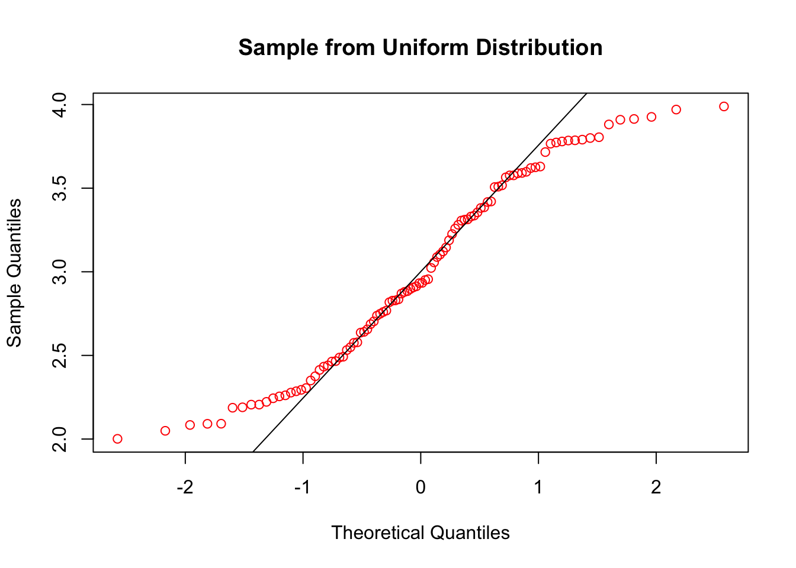

5 데이터 검정
5.1 정규성 검정
정규분포를 따른 통계분석 기법을 사용하기 위해서는 표본의 정규성 여부를 확인해야 한다. 정규성 검정은 shapiro.test() 함수나 qqnorm() 함수를 통해 확인할 수 있다.
##
## Shapiro-Wilk normality test
##
## data: sample
## W = 0.99388, p-value = 0.9349Shapiro-Wilk 정규성 검정은 주어진 표본이 정규성을 따른다는 귀무가설을 검정한다. p값이 0.9349으로 귀무가설을 채택한다. 즉 주어진 표본은 정규성을 따른다고 판단된다.
qqnorm() 함수와 qqline() 함수는 정규성 여부를 시각화 한다.

참고로 일양분포(uniform distribution)로 생성된 표본의 경우 정규성 검정 결과는 다음과 같다.
##
## Shapiro-Wilk normality test
##
## data: sample_uni
## W = 0.95237, p-value = 0.001192p값이 0.0012로 귀무가설을 기각한다. 즉 주어진 표본은 정규성을 따른다고 판단할 수 없다.
